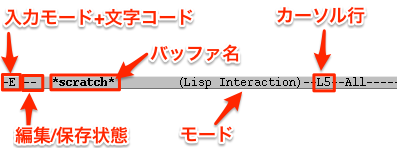

情報基礎B 小ネタ集
Table of Contents
1 このページは何？
- このページでは，情報基礎B で「全員に必要」な知識ではないものの，講義中に受けた質問やトラブル対応過程で得られた知識・情報をお知らせする．
- このページの更新履歴
2 Emacs の文字コード
LaTeX をコンパイルすると日本語が文字化けする場合，Emacs の 文字コードが原因かもしれない．文字コードについての解説は，例えば <a href="http:itpro.nikkeibp.co.jp/article/lecture/20070209/261534/">文字コードの基本：It Pro</a>などが参考になるのでは．
情報演習室の pLaTeX は euc-jp という文字コードのみに対応しているため，ソースファイルがそれ以外の文字コードで記述されていると正しくコンパイルできない．
2.1 文字コードの確認方法
モードラインの一番左に入力モードと文字コードが表示されている．

ここに表示される文字コードが E: (euc-jp)ならば問題ないが, J:, S:, u: などだと，情報演習室の pLaTeX では処理できない．
2.2 文字コードの変更方法
現在開いているバッファの文字コードを euc-jp に変更するためには，以下のキーバインド:
C-x RET f
を入力すると，ミニバッファに
Coding system for saving file (default ****):
と表示される(**** の部分は設定によって異なる)ので，
euc-jp
と入力して RET する．モードラインの文字コードが E: になれば OK．
2.3 デフォルトの文字コードの変更
情報演習室のシステムではデフォルトで euc-jp の文字コードを使うように設定されているが「何かの弾み」で別の文字コードになっていることがある．つまり, C-x C-f でファイルを作成/開くする時に，勝手に別の文字コードにしてしまうのである(平成26年度では utf-8 になっていたケースが数件あった)．
これを変更するには, ~/.emacs.el というファイル(Emacs21以前の設定ファイル)を作成し，それに
;; .emacs (set-default-coding-systems 'euc-jp)
と書いて保存する．Emacs を再起動し， C-x C-f などとして新しくファイルを作成した時に，文字コードが E: となっていたらOK．
3 自宅に Emacs + LaTeX + C開発環境を構築したい
3.1 Mac の場合
- Emacs
- Homebrew で簡単にインストールできる．
Homebrew をインストールするには，事前に Command Line Tools もしくは Xcode をインストールしておく必要がある．いずれも，
からダウンロードできる(事前に Apple ID の登録が必要)． - LaTeX
- 長江研ではインストール先がカスタマイズができることから
TeX Liveを使うように指導しているが，
MacTeX
の方が簡単にインストールできるようだ．
- C開発環境
- Mac にはデフォルトで「端末」に相当する「ターミナル.app」がデフォルトでついている. Cコンパイラの
gccは，上述の Command Line Tools もしくは Xcode に付属してインストールされる(別バージョンのgccを Homebrew で導入することもできる)．
手前味噌で申し訳ないが，長江研で研究環境をセットアップする以下の方法が参考になるかもしれない．
http://nagae.github.io/itl/3.2 Windows の場合
- Emacs
- gnupack
というので簡単にインストールできるようだ．
- LaTeX
- 長江が Windows を使っていた頃は
W32TeX
一択だったが，
TeX Liveの方が豊富なパッケージを一緒にインストールしてくれるようだ．
それぞれのインストール方法については，奥村先生@三重大の
Microsoft Windowsが参考になるだろう．
- C開発環境
- 上述の gnupack には, Windows 上で動く「端末」に相当する(正体はUNIX環境のエミュレータ)の
Cygwin
が同梱される. これに
gccもセットでついてくる(はず)．